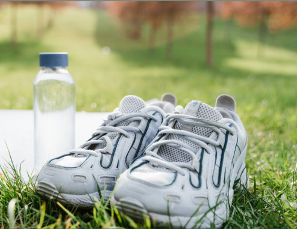
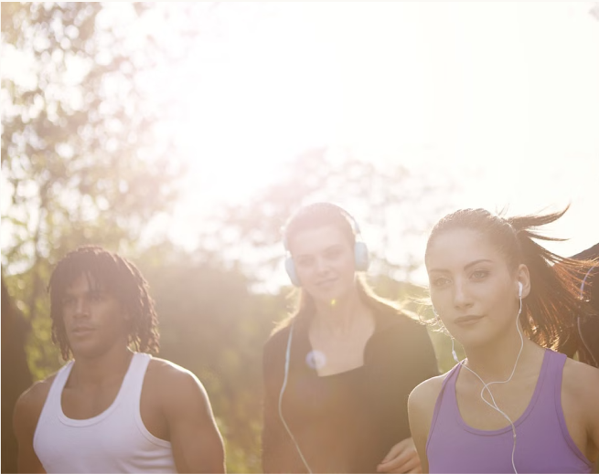
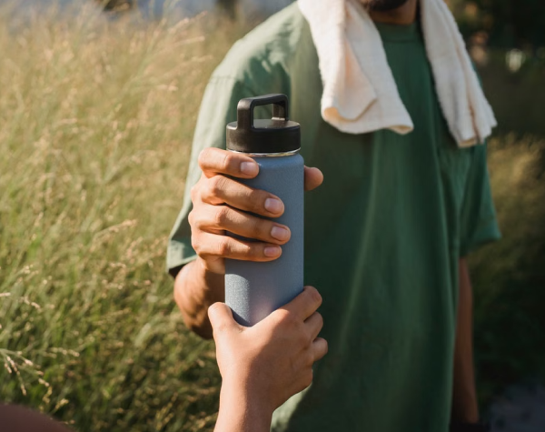
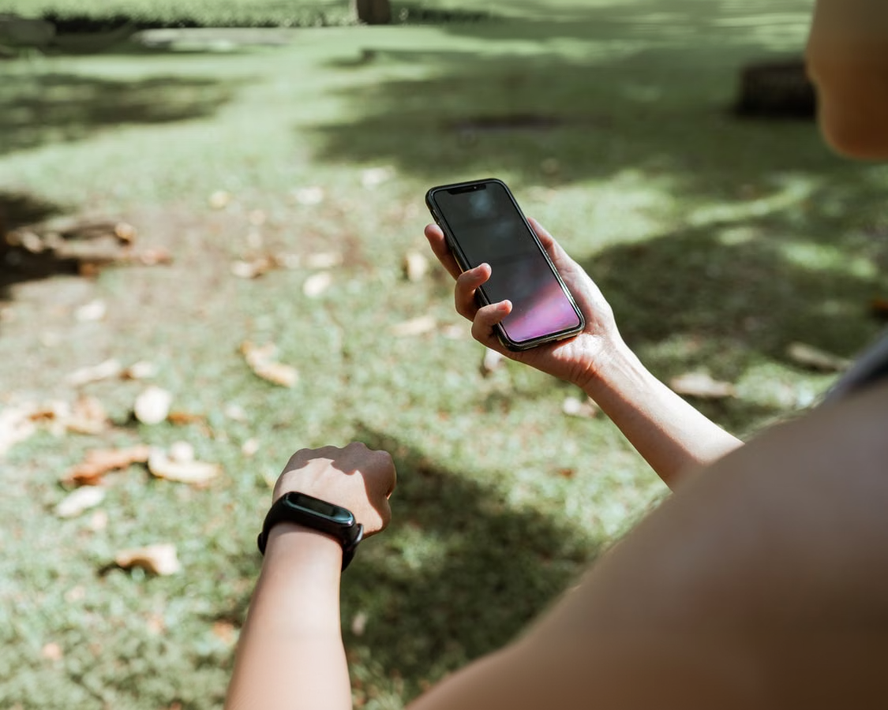

Løbesko
Vælg sko, der passer og føles behagelige. Komfort er vigtigst.
Du behøver ikke meget for at komme i gang. Her er det vigtigste:

Vælg sko, der passer og føles behagelige. Komfort er vigtigst.

Brug tøj, du kan bevæge dig i, og som passer til vejret. Det, du allerede har, kan være et fint sted at starte.

Drik vand, når du er tørstig. Tag en drikkedunk med, hvis du får brug for den undervejs.

Høretelefoner
Mobil
Løbeur eller app